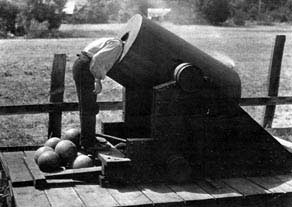

Forums galactiques > Taverne galactique : lieu de discussion informel > Mariage dans la galaxie
Pages : 1
| L'étranger  30/05 ETU 23:33 | Chers Commandants et chères Commandantes, L'étranger et Loulou de Himmel sont fiers de vous annoncer leur mariage. Vous êtes tous cordialement invités à assister à cet heureux événement. Les mariés attendent votre venue avec impatience le 1er juin ETU dans le système 31. La cérémonie se déroulera sur la planète Himmel où la future épouse fera tout pour rendre votre séjour confortable. La noce sera célébrée par le maire de la capitale himmelienne. Les festivités dureront jusqu'à l'épuisement des ressources en Chateau Latour 1985. Que Dieu bénisse cette union. L'étranger et Loulou de Himmel |
Pages : 1
Forums galactiques > Taverne galactique : lieu de discussion informel > Mariage dans la galaxie